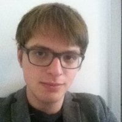

出張予定
September 9-14, ITP 2024, Tbilisi, GeorgiaSeptember 15-21, Proof and Computation 2024, Fischbachau, Germany
過去


論文
- Michal Konečný, Sewon Park, Holger Thies: Formalizing Hyperspaces for Extracting Efficient Exact Real Computation. Proc. of the 48th International Symposium on Mathematical Foundations of Computer Science (MFCS 2023) (2023), 59:1--59:16.
- Michal Konečný, Sewon Park, Holger Thies: Extracting efficient exact real number computation from proofs in constructive type theory. accepted for journal publication (to appear), .
- Michal Konečný, Sewon Park, Holger Thies: Certified Computation of Nondeterministic Limits. NASA Formal Methods Symposium 2022 (2022), pp. 771-789.
- Svetlana Selivanova, Florian Steinberg, Holger Thies, Martin Ziegler: Exact Real Computation of Solution Operators for Linear Analytic Systems of Partial Differential Equations. Proc. of the 23rd International Workshop on Computer Algebra in Scientific Computing (CASC 2021) (2021), pp. 370-390.
- Michal Konečný, Sewon Park, Holger Thies: Axiomatic Reals and Certified Efficient Exact Real Computation. Proc. of the 27th International Workshop on Logic, Language, Information, and Computation (Wollic 2021) (2021), pp. 252-268.
- Florian Steinberg, Laurent Thery, Holger Thies: Computable analysis and notions of continuity in Coq. Logical Methods of Computer Science, Vol. 17(2) (2021), .
- Michal Konečný, Florian Steinberg, Holger Thies: Computable Analysis for Verified Exact Real Computation. Proc. of the 40th IARCS Annual Conference on Foundations of Software Technology and Theoretical Computer Science (FSTTCS 2020), December 14-18, 2020. (2020), 50:1-50:18.
- Michal Konečný, Florian Steinberg, Holger Thies: Continuous and Monotone Machines. Proc. of the 45rd International Symposium on Mathematical Foundations of Computer Science (MFCS 2020), August 24-28, 2020. (2020), pp. 56:1-56:16.
- Florian Steinberg, Laurent Thery, Holger Thies: Quantitative Continuity and Computable Analysis in Coq. Proc. of the 10th International Conference on Interactive Theorem Proving (ITP 2019), September 9-12, 2019, Portland, OR, USA (2019), pp. 28:1-28:21.
- Akitoshi Kawamura, Florian Steinberg, Holger Thies: Second-order linear-time computability with applications to computable analysis. Proc. of the 15th Annual Conference on Theory and Applications of Models of Computation (TAMC 2019), April 13-16, 2019, Kitakyushu, Japan (2019), Chapter 21.
- Akitoshi Kawamura, Holger Thies, Martin Ziegler: Average-case polynomial-time computability of Hamiltonian dynamics. Proc. of the 43rd International Symposium on Mathematical Foundations of Computer Science (MFCS 2018), August 27-31, 2018, Liverpool, UK. (2018), pp. 30:1-30:17.
- Akitoshi Kawamura, Florian Steinberg, Holger Thies: Parameterized Complexity for Uniform Operators on Multidimensional Analytic Functions and ODE Solving. Proc. of the 25th International Workshop on Logic, Language, Information, and Computation (WoLLIC 2018), July 24-27, 2018, Bogota, Colombia (2018), pp. 223-236.
予稿
- Michal Konečný, Florian Steinberg, Holger Thies: Continuous and monotone machines.
学位論文
- Holger Thies: Uniform computational complexity of ordinary differential equations with applications to dynamical systems and exact real arithmetic. PhD thesis, Graduate School of Arts and Sciences, University of Tokyo (2018)
- Holger Thies: Case Studies in Exact Real Arithmetic -- Implementations and empirical Evaluation. Master thesis, Department of Mathematics, Darmstadt University of Technology (2015)
- Holger Thies: Complexity Theory and Practice of Integrating Lipschitz-continuous functions in Exact Real Arithmetic (in German). Bachelor thesis, Department of Mathematics, Darmstadt University of Technology (2011)
職歴
特定講師
京都大学 大学院人間・環境学研究科2021年4月〜
博士研究員
日本学術振興会 特別研究員 PD九州大学大学院システム情報科学研究院
2018年9月〜2019年5月
研究員
日本学術振興会 特別研究員 DC2東京大学総合文化研究科
2018年4月〜2018年8月
研究員 （パート）
ドイツ ダルムシュタット工科大学2015年4月〜2015年8月
学歴
2015年9月〜2018年8月
ダルムシュタット工科大学
ダルムシュタット工科大学大学院数学研究科数学専攻 修士課程
2013年4月〜2015年4月
ダルムシュタット工科大学
ダルムシュタット工科大学数学学部数学学科
2009年10月〜2013年4月
ダルムシュタット工科大学
ダルムシュタット工科大学情報科学学部数学情報科学学科
2008年10月〜2011年10月
長期的研究訪問、留学等
短期的な研究訪問等は出張記録にあります。
2013年10月〜2014年3月
オスロ大学
数学学部数学学科 留学生 （交換留学プログラム）
2011年8月〜2012年6月
その他資格
日本語能力試験1級合格、TOEIC 990点満点取得
主な学会発表 (全て)
17th International Conference on Computability, Complexity and Randomness
Talk: Applications of Exact Real Computation in Particle Physics
Fifth Workshop on Digitalization and Computable Models
Talk: Formal verification and program extraction for efficient computations over real numbers and hyperspaces (Invited Talk)
Continuity, Computability, Constructivity - From Logic to Algorithms 2023
Talk: Advances in verified set and function calculi in Coq
Autumn school Proof and Computation
Talk: Complexity Theory in Analysis with Applications to Differential Equations (Invited Talk)
Computability, Continuity, Constructivity - from Logic to Algorithms 2019
Talk: Analytic ordinary differential equations - from computational complexity to efficient and verified algorithms (Invited talk)
Sixteenth International Conference on Computability and Complexity in Analysis
Talk: Formal proofs about metric spaces and continuity in Coq
研究資金
科研費 若手研究
Research on Computable Analysis and Verification of Efficient Exact Real Computation（24K20735）代表
04/2024 - 03/2029
04/2023 - 03/2028
科研費 若手研究
Computational complexity and practice of verified and efficient algorithms for dynamical systems（20K19744）代表
04/2020 - 03/2025
04/2018 - 03/2020